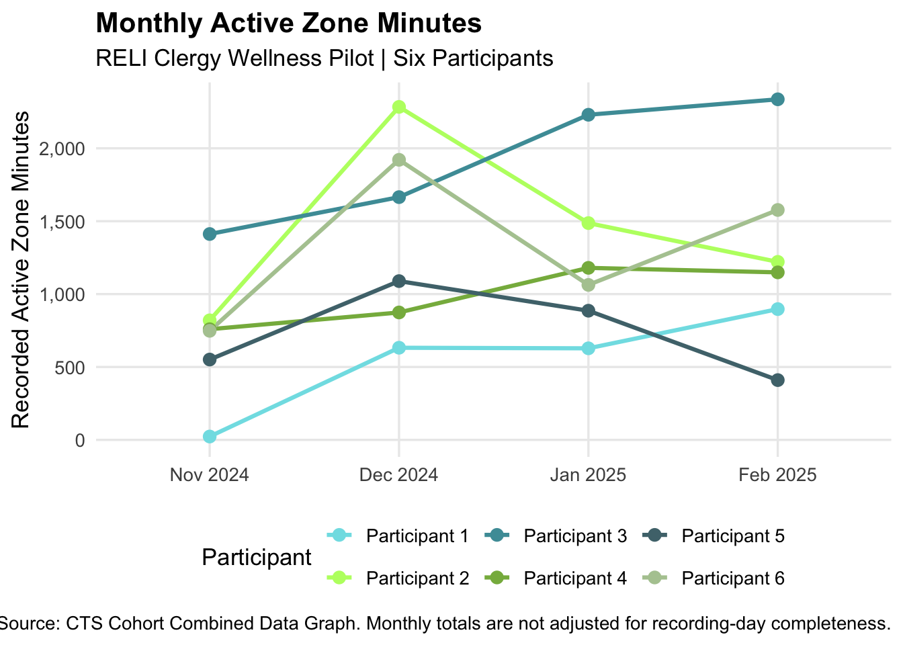
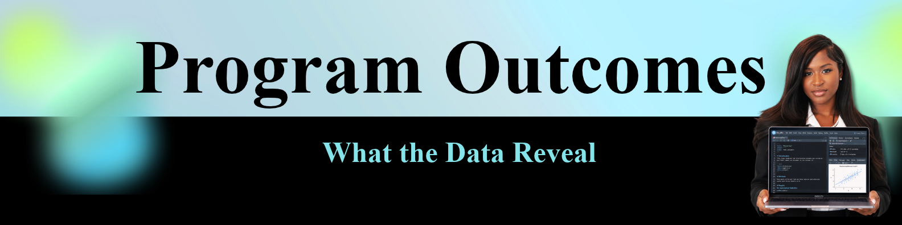
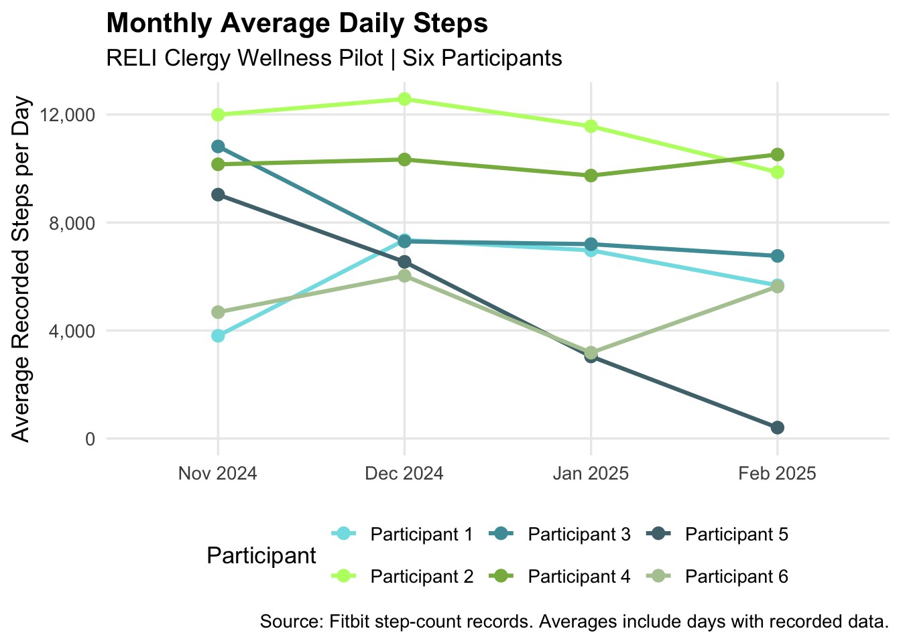
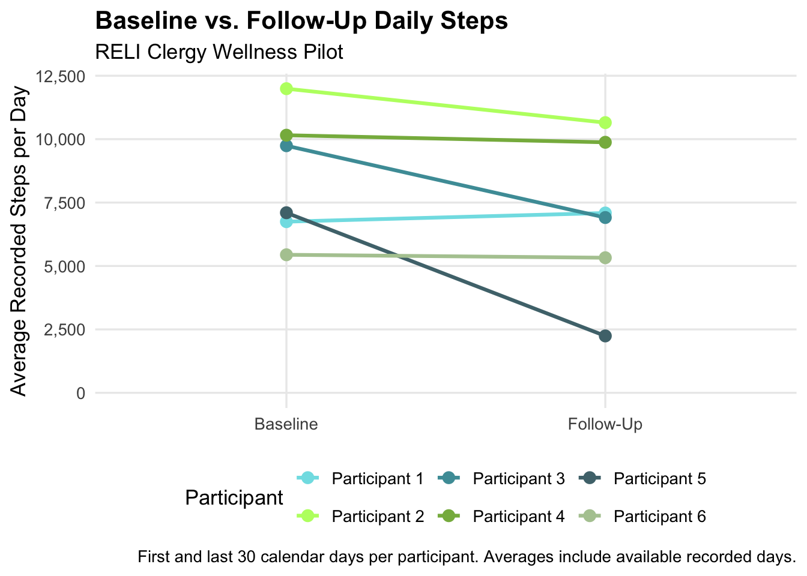

Program Outcomes

What the Data Reveal
This section presents descriptive findings from the Resilience in Leadership Initiative (RELI) Clergy Wellness Pilot, including Fitbit-derived physical activity outcomes. The pilot also incorporated wellness assessments and spiritual leadership development, discussed elsewhere on this website.
The visualizations below were developed in RStudio to examine recorded activity patterns across six participants from November 2024 through February 2025.
Fitbit-Derived Physical Activity Outcomes
Monthly Active Zone Minutes
Interpreting Activity Patterns
Recorded Active Zone Minutes varied substantially across participants and months.
Several participants recorded higher totals in December than in November, while others continued to increase into January or February. These patterns indicate that recorded activity trajectories were not uniform across the pilot cohort.
However, monthly totals may be influenced by differences in Fitbit onboarding, device wear, recording completeness, and the number of days represented within each month.
These findings are descriptive and should not be interpreted as evidence that the intervention independently caused changes in physical activity.
Monthly Step Counts

Interpretation of Monthly Step Counts
Average daily recorded steps varied across participants throughout the RELI Clergy Wellness Pilot. The observed patterns suggest substantial individual variation in recorded physical activity during the observation period.
The number of days with Fitbit step-count records also differed across participants, ranging from 66 to 105 days.
These differences may reflect variation in device use, onboarding dates, recording completeness, or participants’ activity patterns. Days containing only partial recordings were not independently validated as complete device-wear days.
Consequently, these averages should be interpreted as descriptive measures of available recorded activity rather than definitive estimates of participants’ total daily physical activity.
Baseline and Follow-Up Physical Activity

Interpreting Baseline and Follow-Up Patterns
The comparison of the first and last 30 calendar days of available Fitbit records reveals differences in recorded daily step averages across participants.
Some participants demonstrated higher average recorded steps during their final observation window, while others showed lower averages. These mixed patterns indicate that changes in recorded activity were not consistent across all six participants.
Importantly, these periods represent the beginning and end of each participant’s available Fitbit data, rather than standardized pre-intervention and post-intervention assessments.
Differences in recording completeness, seasonal conditions, participant schedules, and device use may influence the observed comparisons.
Therefore, the figure should be understood as an exploratory comparison of recorded activity patterns, not as a causal estimate of intervention effectiveness.
Public Health Interpretation
The RELI pilot demonstrates the potential value of incorporating wearable activity monitoring into faith-centered wellness programming.
Fitbit records provide an opportunity to describe physical activity patterns over time, complementing participants’ self-reported wellness priorities and experiences.
However, the findings also highlight the importance of consistent device use, standardized observation periods, and clear procedures for evaluating data completeness.
Future RELI evaluations could strengthen physical activity measurement by establishing minimum recording-day criteria, monitoring device adherence, and comparing equivalent observation periods.
Taken together, these findings support continued exploration of integrated wellness approaches that address the physical, spiritual, and professional responsibilities of faith leaders.
Evaluation Limitations
This analysis has several important limitations:
- Small sample: Fitbit activity records were available for six participants.
- Incomplete recordings: Recorded days may not represent complete 24-hour activity measurements.
- Unequal observation periods: Participants began and ended recording on different dates.
- Descriptive design: No comparison group or standardized causal evaluation was available.
- Measurement differences: Monthly Active Zone Minutes and daily step counts capture different dimensions of physical activity.
These limitations should inform the interpretation of findings and the design of future RELI evaluations.